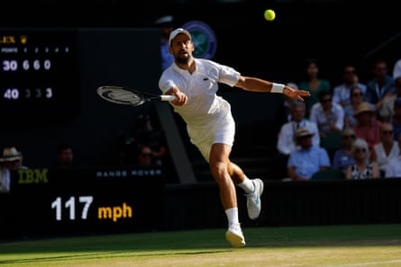

The Moment comes at the start of the third set. Nobody in tennis can spot a Moment like Novak Djokovic . The Moment is where he lives, breathes, puts gluten-free food on his family’s table. What happened before was irrelevant. You can rattle and bully him. You can pummel him off Centre Court for an hour, as Jannik Sinner has done. Djokovic will still prowl the chain-link fence all evening, probing it, waiting for the one gap wide enough to let him squeeze through. The point of greatest weakness is where he finds his greatest strength.
Sinner’s at 30-30 on his own serve. A defensive backhand from Djokovic sits up invitingly in mid-court, pleading to be dispatched. The world No 1, utterly impeccable to this point, swings a giant fist at the ball and somehow sends it flying in the vague direction of Tooting Broadway. The crowd yelps in shock. Next point Sinner nets a weak forehand, Djokovic raises a fist of defiance, and in the space of a few minutes – plus a few extra for the now-traditional Djokovic treatment break – this particular Italian job has had its bloody doors blown off.
And because of what Djokovic was, these moments still feel like they might mean something. Nobody ever got rich writing off the most decorated men’s player in history. But because of what Djokovic now is, these moments are so often also illusory: flickering candles of defiance in a gathering storm. Briefly rattled, Sinner collected himself, remembered he was by far the superior player, regained the break and resumed his regal march to a first Wimbledon final .
You may be tempted to posit that a grand slam semi-final is a very commendable effort, indeed a borderline-superhuman feat at 38, an age where most former champions are making their first acquaintance with Mansour Bahrami in the invitational doubles on court three. But of course this is why you are not Novak Djokovic and Novak Djokovic is: not just a perfectionist but a completist, a man who always dealt not in moments but in monuments.
And on what has become his most comfortable surface, this may have been the moment Project 25 was buried for good . This was meant to go long and deep. Djokovic was going to make it painful, make it heavy, hang in there, use his experience and slowly turn the screw against an injury-hampered Sinner. Instead he was carved up in less than two hours, dominated – shockingly so – on every metric, and in one other important aspect too. Even in defeat, Djokovic could drag you into the pain zone, force you on to his turf, make you play to his rhythm.
Novak Djokovic had a glimmer of hope in the third set before Jannik Sinner showed his power and finished off the match.Photograph: Tom Jenkins/The Guardian
But now the angles don’t seem to exist any more. The court feels bigger under his feet. Sinner was imperious on his serve, hitting Djokovic out of the rallies, forcing the greatest baseline player of all time away from his place of safety. And Djokovic without the baseline is basically like Hendrix without a guitar, or telling Wes Anderson he can’t use a whip pan. By the end, the ultimate back-court hustler wasn’t even bothering to chase every ball down, not even the very last, put away by Sinner as Djokovic trudged sadly back to his seat.
And for all the court craft and tactical nous, the matchplay skills and the iron will, ultimately Djokovic’s main point of difference was his body: those ridiculous splaying limbs, the awesome power coiled up in that slender frame, the engine that never seemed to tire, those lightning bursts of speed when it felt like the court might catch fire under him. Djokovic at his most powerful was like playing a giant animatronic spider, a physical advantage so severe it felt like a kind of category difference.
Back in his imperial phase he would regard his defeats as learning experiences, rocket fuel for his inevitable next triumph. But now there is no inevitability. Nobody knows how much “next” remains. He has 10 members of staff devoted to curating his life in tennis, everything from tactics to training to nutrition to recovery. “Sometimes I get tired of all the chores I have to do on a daily basis,” he said this week. Instead it is Sinner on the steep learning curve, a player who claims to have taken more from Djokovic’s game than anybody on tour: the consistency, the relentlessness, the bravery. He even seems to have pilfered the famous Djokovic slide, evidence of a machine intelligence set on decrypting the game’s every remaining puzzle.
Jelena Djokovic always used to joke that if her husband ever had a spare 10 minutes, he would invariably spend it stretching: calves, hamstrings, shoulders, side body. Now, it’s time he’s trying to stretch out. One more gym session, one more grand slam, one more season, one more step up the mountain of immortality. This Wimbledon felt like his best chance of burgling one last big pot. Instead, his defeat has simply underlined the broadening chasm between the Big Two and the man they once tried to chase down.
What happens now is anyone’s guess. The perfectionist in Djokovic will surely not allow him to drift through men’s tennis as a vapour of his former self, grimacing his way through painful second-round defeats as his former coach Andy Murray forced himself to do. But the completist in him will surely not be content to end it like this: ground into the dirt in three short sets by a monster he helped to create. There may be more moments. There may just be one more big run. But even for Djokovic, time will not stretch for ever.